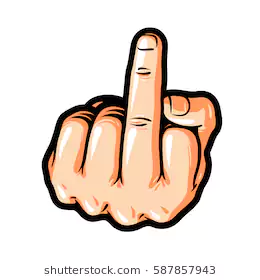

8 WORD GAME

Game
A game is a strGames are often classified by the components required to play them (e.g. miniatures, a ball, cards, a board and pieces, or a computer). In places where the use of leather is well-established, the ball has been a popular game piece throughout recorded history, resulting in a worldwide popularity of ball games such as rugby, basketball, soccer (football), cricket, tennis, and volleyball. Other tools are more idiosyncratic to a certain region. Many countries in Europe, for instance, have unique standard decks of playing cards. Other games such as chess may be traced primarily through the development and evolution of its game pieces.
Many game tools are tokens, meant to represent other things. A token may be a pawn on a board, play money, or an intangible item such as a point scored.
Games such as hide-and-seek or tag do not use any obvious tool; rather, their interactivity is defined by the environment. Games with the same or similar rules may have different gameplay if the environment is altered. For example, hide-and-seek in a school building differs from the same game in a park; an auto race can be radically different depending on theGames are often classified by the components required to play them (e.g. miniatures, a ball, cards, a board and pieces, or a computer). In places where the use of leather is well-established, the ball has been a popular game piece throughout recorded history, resulting in a worldwide popularity of ball games such as rugby, basketball, soccer (football), cricket, tennis, and volleyball. Other tools are more idiosyncratic to a certain region. Many countries in Europe, for instance, have unique standard decks of playing cards. Other games such as chess may be traced primarily through the development and evolution of its game pieces.
Many game tools are tokens, meant to represent other things. A token may be a pawn on a board, play money, or an intangible item such as a point scored.
Games such as hide-and-seek or tag do not use any obvious tool; rather, their interactivity is defined by the environment. Games with the same or similar rules may have different gameplay if the environment is altered. For example, hide-and-seek in a school building differs from the same game in a park; an auto race can be radically different depending on the track or street course, even with the same cars track or street course, even with the same carsuctured form of play, usually undertaken for enjoyment and sometimes used as an educational tool.[1] Games are distinct from work, which is usually carried out for remuneration, and from art, which is more often an expression of aesthetic or ideological elements. However, the distinction is not clear-cut, and many games are also considered to be work